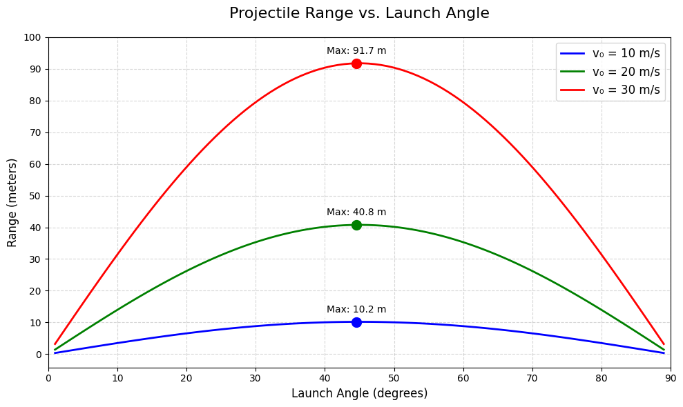
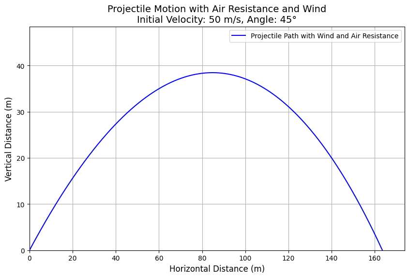

Problem 1
Problem 1: Investigating the Range as a Function of the Angle of Projection
Motivation
Projectile motion is a fundamental topic in physics that provides insight into motion under the influence of gravity. By analyzing how the range of a projectile depends on its angle of projection, we can explore the underlying principles of kinematics and dynamics.
The motion is governed by a set of equations involving parameters such as: - Initial velocity (\(v_0\)) - Acceleration due to gravity (\(g\)) - Launch height (\(h\)) - Launch angle (\(\theta\))
These parameters influence the motion in both the horizontal and vertical directions, leading to a wide range of applications, from sports to aerospace engineering.
1. Theoretical Foundation
Equations of Motion
The motion of a projectile can be analyzed by splitting it into horizontal and vertical components.
1.1 Kinematic Equations
-
Horizontal motion (constant velocity): $$ x = v_0 \cos(\theta) t $$
-
Vertical motion (under acceleration due to gravity): $$ y = h + v_0 \sin(\theta) t - \frac{1}{2} g t^2 $$
1.2 Time of Flight
The time it takes for the projectile to hit the ground (\(y=0\)) is found by solving:
Solving this quadratic equation for \(t\), we get:
1.3 Range of the Projectile
The range \(R\) is the horizontal distance covered by the projectile:
Substituting \(t\) from the time of flight equation:
For a projectile launched from ground level (\(h=0\)), the formula simplifies to:
2. Analysis of the Range
2.1 Dependence on Launch Angle
- The range is maximum when \(\theta = 45^\circ\) in the ideal case (\(h=0\)).
- For nonzero initial height, the maximum angle may shift slightly.
2.2 Effect of Other Parameters
- Increasing \(v_0\) increases the range quadratically.
- Higher launch heights generally increase the range.
- Increasing \(g\) (e.g., on different planets) decreases the range.
3. Practical Applications
- Sports: Optimizing the angle for maximum distance in long jump, basketball shots, etc.
- Engineering: Designing artillery, rocket launch trajectories.
- Astrophysics: Studying trajectories of objects on planetary surfaces.
4. Implementation in Python

import numpy as np
import matplotlib.pyplot as plt
def projectile_range(v0, theta, h=0, g=9.81):
theta_rad = np.deg2rad(theta)
term = v0 * np.sin(theta_rad)
t_flight = (term + np.sqrt(term**2 + 2*g*h)) / g
return v0 * np.cos(theta_rad) * t_flight
# Generate plot
angles = np.linspace(0, 90, 100)
plt.plot(angles, [projectile_range(25, a) for a in angles], label='h=0')
plt.plot(angles, [projectile_range(25, a, 5) for a in angles], label='h=5m')
plt.xlabel('Launch Angle (degrees)')
plt.ylabel('Range (m)')
plt.legend()
plt.grid(True)
plt.show()
5. Example Calculations
Example 1: Finding the Maximum Range
If \(v_0 = 20\) m/s and \(h=0\),
Example 2: Effect of Launch Height
If \(v_0 = 20\) m/s and \(h=5\) m,
Using the general range formula, we get:
$$ R \approx 45.2 \text{ m} $$ 
Example 6: Limitations and Extensions
1. Air Resistance
Real-world projectiles experience drag force, which opposes motion and is proportional to velocity.
The equation of motion with air resistance is:
where \( k \) is the drag coefficient. This modifies the projectile’s trajectory and reduces the range.
2. Wind Effects
- Tailwind increases the range.
- Headwind reduces the range.
- Crosswinds alter the projectile’s horizontal trajectory.
3. Uneven Terrain
- If a projectile lands on a slope or rough ground, the impact location will differ from the idealized case.
- This requires numerical methods for better predictions.
Numerical Approach
Instead of using analytical equations, we can solve the motion equations numerically: - Euler’s method or Runge-Kutta methods can approximate the path. - Computational tools help visualize how drag, wind, and terrain impact motion.
Next Steps
- Implement a Python simulation to model projectile motion under real-world conditions.

Projectile Motion Simulation with Air Resistance
This project simulates projectile motion with air resistance using Python and NumPy.
The code was executed in Google Colab, and the generated image is included below.
Python Code in Colab
```python import numpy as np import matplotlib.pyplot as plt
Function to simulate projectile motion with air resistance
def projectile_motion(v0, theta, h=0, wind=0, k=0.1, g=9.81, t_max=10, dt=0.01): theta_rad = np.radians(theta) v0x = v0 * np.cos(theta_rad) + wind # Initial horizontal velocity, including wind effect v0y = v0 * np.sin(theta_rad) # Initial vertical velocity
# Initial conditions
x, y = 0, h
vx, vy = v0x, v0y
# Lists to store the trajectory
x_vals, y_vals = [x], [y]
t = 0
while y >= 0 and t < t_max: # Stop if projectile hits the ground
# Calculate air resistance forces
fx = -k * vx
fy = -k * vy
# Update velocities
ax = fx # No horizontal acceleration due to gravity (only air resistance)
ay = -g + fy # Vertical acceleration due to gravity and air resistance
vx += ax * dt
vy += ay * dt
# Update positions
x += vx * dt
y += vy * dt
# Store the current position
x_vals.append(x)
y_vals.append(y)
t += dt
return np.array(x_vals), np.array(y_vals)
Parameters
v0 = 50 # Initial velocity (m/s) theta = 45 # Launch angle (degrees) h = 0 # Initial height (m) wind = 5 # Wind speed (m/s), positive for tailwind k = 0.05 # Air resistance coefficient t_max = 15 # Max time for simulation
Simulate projectile motion with air resistance and wind
x_vals, y_vals = projectile_motion(v0, theta, h, wind, k, t_max)
Plotting
plt.figure(figsize=(10, 6)) plt.plot(x_vals, y_vals, label="Projectile Path with Wind and Air Resistance", color='b') plt.title(f"Projectile Motion with Air Resistance and Wind\nInitial Velocity: {v0} m/s, Angle: {theta}°", fontsize=14) plt.xlabel("Horizontal Distance (m)", fontsize=12) plt.ylabel("Vertical Distance (m)", fontsize=12) plt.grid(True) plt.legend() plt.xlim(0, max(x_vals) + 10) plt.ylim(0, max(y_vals) + 10)
Show plot
plt.show()